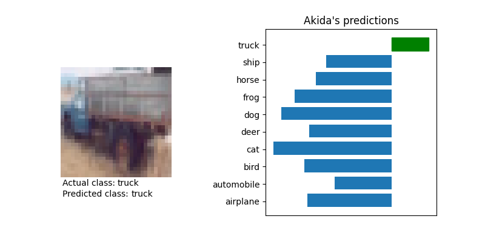

<!DOCTYPE html>
<html class="writer-html5" lang="en" >
<head>
  <meta charset="utf-8">
  
  <meta name="viewport" content="width=device-width, initial-scale=1.0">
  
  <title>DS-CNN CIFAR10 inference &mdash; Akida Examples  documentation</title>
  

  
  <link rel="stylesheet" href="../_static/css/theme.css" type="text/css" />
  <link rel="stylesheet" href="../_static/pygments.css" type="text/css" />
  <link rel="stylesheet" href="../_static/gallery.css" type="text/css" />
  <link rel="stylesheet" href="../_static/gallery-binder.css" type="text/css" />
  <link rel="stylesheet" href="../_static/gallery-dataframe.css" type="text/css" />

  
  
    <link rel="shortcut icon" href="../_static/favicon.ico"/>
  
  
  

  
  <!--[if lt IE 9]>
    <script src="../_static/js/html5shiv.min.js"></script>
  <![endif]-->
  
    
      <script type="text/javascript" id="documentation_options" data-url_root="../" src="../_static/documentation_options.js"></script>
        <script src="../_static/jquery.js"></script>
        <script src="../_static/underscore.js"></script>
        <script src="../_static/doctools.js"></script>
        <script src="../_static/language_data.js"></script>
    
    <script type="text/javascript" src="../_static/js/theme.js"></script>

    
    <link rel="index" title="Index" href="../genindex.html" />
    <link rel="search" title="Search" href="../search.html" />
    <link rel="next" title="YOLO/PASCAL-VOC detection tutorial" href="plot_voc_yolo_detection.html" />
    <link rel="prev" title="DS-CNN/KWS inference" href="plot_ds_cnn_kws.html" /> 
</head>

<body class="wy-body-for-nav">

   
  <div class="wy-grid-for-nav">
    
    <nav data-toggle="wy-nav-shift" class="wy-nav-side">
      <div class="wy-side-scroll">
        <div class="wy-side-nav-search"  style="background: #3f51b5" >
          

          
            <a href="../index.html">
          

          
            
            
          
          </a>

          
            
            
              <div class="version">
                Akida 1.8.9
              </div>
            
          

          
<div role="search">
  <form id="rtd-search-form" class="wy-form" action="../search.html" method="get">
    <input type="text" name="q" placeholder="Search docs" />
    <input type="hidden" name="check_keywords" value="yes" />
    <input type="hidden" name="area" value="default" />
  </form>
</div>

          
        </div>

        
        <div class="wy-menu wy-menu-vertical" data-spy="affix" role="navigation" aria-label="main navigation">
          
            
            
              
            
            
              <ul class="current">
<li class="toctree-l1"><a class="reference internal" href="../index.html">Overview</a></li>
<li class="toctree-l1"><a class="reference internal" href="../installation.html">Installation</a><ul>
<li class="toctree-l2"><a class="reference internal" href="../installation.html#requirements">Requirements</a></li>
<li class="toctree-l2"><a class="reference internal" href="../installation.html#quick-installation">Quick installation</a></li>
<li class="toctree-l2"><a class="reference internal" href="../installation.html#running-examples">Running examples</a></li>
</ul>
</li>
<li class="toctree-l1"><a class="reference internal" href="../user_guide/user_guide.html">User guide</a><ul>
<li class="toctree-l2"><a class="reference internal" href="../user_guide/getting_started.html">Getting started</a><ul>
<li class="toctree-l3"><a class="reference internal" href="../user_guide/getting_started.html#for-beginners">For beginners</a></li>
<li class="toctree-l3"><a class="reference internal" href="../user_guide/getting_started.html#for-users-familiar-with-deep-learning">For users familiar with deep-learning</a></li>
</ul>
</li>
<li class="toctree-l2"><a class="reference internal" href="../user_guide/aee.html">Akida user guide</a><ul>
<li class="toctree-l3"><a class="reference internal" href="../user_guide/aee.html#the-akida-execution-engine">The Akida Execution Engine</a><ul>
<li class="toctree-l4"><a class="reference internal" href="../user_guide/aee.html#id1">1. The Spiking Neural Network model</a></li>
<li class="toctree-l4"><a class="reference internal" href="../user_guide/aee.html#id2">2. Input data format</a></li>
<li class="toctree-l4"><a class="reference internal" href="../user_guide/aee.html#id3">3. Determine training mode</a></li>
<li class="toctree-l4"><a class="reference internal" href="../user_guide/aee.html#id4">4. Interpreting outputs</a></li>
</ul>
</li>
<li class="toctree-l3"><a class="reference internal" href="../user_guide/aee.html#neural-network-model">Neural Network model</a><ul>
<li class="toctree-l4"><a class="reference internal" href="../user_guide/aee.html#specifying-the-neural-network-model">Specifying the Neural Network model</a></li>
<li class="toctree-l4"><a class="reference internal" href="../user_guide/aee.html#saving-and-loading">Saving and loading</a></li>
<li class="toctree-l4"><a class="reference internal" href="../user_guide/aee.html#input-layer-types">Input layer types</a></li>
<li class="toctree-l4"><a class="reference internal" href="../user_guide/aee.html#data-processing-layer-types">Data-Processing layer types</a></li>
</ul>
</li>
<li class="toctree-l3"><a class="reference internal" href="../user_guide/aee.html#id5">Using Akida Unsupervised Learning</a><ul>
<li class="toctree-l4"><a class="reference internal" href="../user_guide/aee.html#learning-constraints">Learning constraints</a></li>
<li class="toctree-l4"><a class="reference internal" href="../user_guide/aee.html#compiling-a-layer">Compiling a layer</a></li>
<li class="toctree-l4"><a class="reference internal" href="../user_guide/aee.html#id6">Learning parameters</a></li>
</ul>
</li>
</ul>
</li>
<li class="toctree-l2"><a class="reference internal" href="../user_guide/cnn2snn.html">CNN2SNN toolkit</a><ul>
<li class="toctree-l3"><a class="reference internal" href="../user_guide/cnn2snn.html#overview">Overview</a><ul>
<li class="toctree-l4"><a class="reference internal" href="../user_guide/cnn2snn.html#conversion-workflow">Conversion workflow</a></li>
<li class="toctree-l4"><a class="reference internal" href="../user_guide/cnn2snn.html#typical-training-scenario">Typical training scenario</a></li>
<li class="toctree-l4"><a class="reference internal" href="../user_guide/cnn2snn.html#design-compatibility-constraints">Design compatibility constraints</a></li>
<li class="toctree-l4"><a class="reference internal" href="../user_guide/cnn2snn.html#quantization-compatibility-constraints">Quantization compatibility constraints</a></li>
<li class="toctree-l4"><a class="reference internal" href="../user_guide/cnn2snn.html#command-line-interface">Command-line interface</a></li>
</ul>
</li>
<li class="toctree-l3"><a class="reference internal" href="../user_guide/cnn2snn.html#layers-considerations">Layers Considerations</a><ul>
<li class="toctree-l4"><a class="reference internal" href="../user_guide/cnn2snn.html#supported-layer-types">Supported layer types</a></li>
<li class="toctree-l4"><a class="reference internal" href="../user_guide/cnn2snn.html#cnn2snn-quantization-aware-layers">CNN2SNN Quantization-aware layers</a></li>
<li class="toctree-l4"><a class="reference internal" href="../user_guide/cnn2snn.html#training-only-layers">Training-Only Layers</a></li>
<li class="toctree-l4"><a class="reference internal" href="../user_guide/cnn2snn.html#first-layers">First Layers</a></li>
<li class="toctree-l4"><a class="reference internal" href="../user_guide/cnn2snn.html#id6">Final Layers</a></li>
</ul>
</li>
<li class="toctree-l3"><a class="reference internal" href="../user_guide/cnn2snn.html#tips-and-tricks">Tips and Tricks</a></li>
</ul>
</li>
<li class="toctree-l2"><a class="reference internal" href="../user_guide/akida_models.html">Akida models zoo</a><ul>
<li class="toctree-l3"><a class="reference internal" href="../user_guide/akida_models.html#overview">Overview</a></li>
<li class="toctree-l3"><a class="reference internal" href="../user_guide/akida_models.html#command-line-interface-for-model-creation">Command-line interface for model creation</a></li>
<li class="toctree-l3"><a class="reference internal" href="../user_guide/akida_models.html#command-line-interface-for-model-training">Command-line interface for model training</a><ul>
<li class="toctree-l4"><a class="reference internal" href="../user_guide/akida_models.html#cifar10-training-and-tuning">CIFAR10 training and tuning</a></li>
<li class="toctree-l4"><a class="reference internal" href="../user_guide/akida_models.html#utk-face-training">UTK Face training</a></li>
<li class="toctree-l4"><a class="reference internal" href="../user_guide/akida_models.html#kws-training">KWS training</a></li>
<li class="toctree-l4"><a class="reference internal" href="../user_guide/akida_models.html#yolo-training">YOLO training</a></li>
</ul>
</li>
<li class="toctree-l3"><a class="reference internal" href="../user_guide/akida_models.html#id1">Layer Blocks</a><ul>
<li class="toctree-l4"><a class="reference internal" href="../user_guide/akida_models.html#conv-block"><code class="docutils literal notranslate"><span class="pre">conv_block</span></code></a></li>
<li class="toctree-l4"><a class="reference internal" href="../user_guide/akida_models.html#dense-block"><code class="docutils literal notranslate"><span class="pre">dense_block</span></code></a></li>
<li class="toctree-l4"><a class="reference internal" href="../user_guide/akida_models.html#separable-conv-block"><code class="docutils literal notranslate"><span class="pre">separable_conv_block</span></code></a></li>
</ul>
</li>
</ul>
</li>
<li class="toctree-l2"><a class="reference internal" href="../user_guide/hw_constraints.html">Hardware constraints</a><ul>
<li class="toctree-l3"><a class="reference internal" href="../user_guide/hw_constraints.html#input-layer">Input layer</a></li>
<li class="toctree-l3"><a class="reference internal" href="../user_guide/hw_constraints.html#data-processing-layers">Data-Processing layers</a><ul>
<li class="toctree-l4"><a class="reference internal" href="../user_guide/hw_constraints.html#convolutional-layer">Convolutional layer</a></li>
<li class="toctree-l4"><a class="reference internal" href="../user_guide/hw_constraints.html#fully-connected-layer">Fully connected layer</a></li>
</ul>
</li>
</ul>
</li>
</ul>
</li>
<li class="toctree-l1"><a class="reference internal" href="../api_reference/api_reference.html">API reference</a><ul>
<li class="toctree-l2"><a class="reference internal" href="../api_reference/aee_apis.html">Akida Execution Engine</a><ul>
<li class="toctree-l3"><a class="reference internal" href="../api_reference/aee_apis.html#model">Model</a></li>
<li class="toctree-l3"><a class="reference internal" href="../api_reference/aee_apis.html#layer">Layer</a></li>
<li class="toctree-l3"><a class="reference internal" href="../api_reference/aee_apis.html#layerstatistics">LayerStatistics</a></li>
<li class="toctree-l3"><a class="reference internal" href="../api_reference/aee_apis.html#observer">Observer</a></li>
<li class="toctree-l3"><a class="reference internal" href="../api_reference/aee_apis.html#inputdata">InputData</a></li>
<li class="toctree-l3"><a class="reference internal" href="../api_reference/aee_apis.html#inputconvolutional">InputConvolutional</a></li>
<li class="toctree-l3"><a class="reference internal" href="../api_reference/aee_apis.html#fullyconnected">FullyConnected</a></li>
<li class="toctree-l3"><a class="reference internal" href="../api_reference/aee_apis.html#convolutional">Convolutional</a></li>
<li class="toctree-l3"><a class="reference internal" href="../api_reference/aee_apis.html#separableconvolutional">SeparableConvolutional</a></li>
<li class="toctree-l3"><a class="reference internal" href="../api_reference/aee_apis.html#dense">Dense</a></li>
<li class="toctree-l3"><a class="reference internal" href="../api_reference/aee_apis.html#sparse">Sparse</a></li>
<li class="toctree-l3"><a class="reference internal" href="../api_reference/aee_apis.html#coords-to-sparse">coords_to_sparse</a></li>
<li class="toctree-l3"><a class="reference internal" href="../api_reference/aee_apis.html#dense-to-sparse">dense_to_sparse</a></li>
<li class="toctree-l3"><a class="reference internal" href="../api_reference/aee_apis.html#packetize">packetize</a></li>
<li class="toctree-l3"><a class="reference internal" href="../api_reference/aee_apis.html#backend">Backend</a></li>
<li class="toctree-l3"><a class="reference internal" href="../api_reference/aee_apis.html#convolutionmode">ConvolutionMode</a></li>
<li class="toctree-l3"><a class="reference internal" href="../api_reference/aee_apis.html#poolingtype">PoolingType</a></li>
<li class="toctree-l3"><a class="reference internal" href="../api_reference/aee_apis.html#learningtype">LearningType</a></li>
<li class="toctree-l3"><a class="reference internal" href="../api_reference/aee_apis.html#compatibility">Compatibility</a></li>
</ul>
</li>
<li class="toctree-l2"><a class="reference internal" href="../api_reference/cnn2snn_apis.html">CNN2SNN</a><ul>
<li class="toctree-l3"><a class="reference internal" href="../api_reference/cnn2snn_apis.html#quantize">quantize</a></li>
<li class="toctree-l3"><a class="reference internal" href="../api_reference/cnn2snn_apis.html#quantize-layer">quantize_layer</a></li>
<li class="toctree-l3"><a class="reference internal" href="../api_reference/cnn2snn_apis.html#convert">convert</a></li>
<li class="toctree-l3"><a class="reference internal" href="../api_reference/cnn2snn_apis.html#check-model-compatibility">check_model_compatibility</a></li>
<li class="toctree-l3"><a class="reference internal" href="../api_reference/cnn2snn_apis.html#weightquantizer">WeightQuantizer</a></li>
<li class="toctree-l3"><a class="reference internal" href="../api_reference/cnn2snn_apis.html#trainableweightquantizer">TrainableWeightQuantizer</a></li>
<li class="toctree-l3"><a class="reference internal" href="../api_reference/cnn2snn_apis.html#maxquantizer">MaxQuantizer</a></li>
<li class="toctree-l3"><a class="reference internal" href="../api_reference/cnn2snn_apis.html#maxperaxisquantizer">MaxPerAxisQuantizer</a></li>
<li class="toctree-l3"><a class="reference internal" href="../api_reference/cnn2snn_apis.html#weightfloat">WeightFloat</a></li>
<li class="toctree-l3"><a class="reference internal" href="../api_reference/cnn2snn_apis.html#quantizedconv2d">QuantizedConv2D</a></li>
<li class="toctree-l3"><a class="reference internal" href="../api_reference/cnn2snn_apis.html#quantizeddepthwiseconv2d">QuantizedDepthwiseConv2D</a></li>
<li class="toctree-l3"><a class="reference internal" href="../api_reference/cnn2snn_apis.html#quantizeddense">QuantizedDense</a></li>
<li class="toctree-l3"><a class="reference internal" href="../api_reference/cnn2snn_apis.html#quantizedseparableconv2d">QuantizedSeparableConv2D</a></li>
<li class="toctree-l3"><a class="reference internal" href="../api_reference/cnn2snn_apis.html#activationdiscreterelu">ActivationDiscreteRelu</a></li>
<li class="toctree-l3"><a class="reference internal" href="../api_reference/cnn2snn_apis.html#quantizedrelu">QuantizedReLU</a></li>
</ul>
</li>
<li class="toctree-l2"><a class="reference internal" href="../api_reference/akida_models_apis.html">Akida models</a><ul>
<li class="toctree-l3"><a class="reference internal" href="../api_reference/akida_models_apis.html#quantization-blocks">Quantization blocks</a><ul>
<li class="toctree-l4"><a class="reference internal" href="../api_reference/akida_models_apis.html#conv-block">conv_block</a></li>
<li class="toctree-l4"><a class="reference internal" href="../api_reference/akida_models_apis.html#separable-conv-block">separable_conv_block</a></li>
<li class="toctree-l4"><a class="reference internal" href="../api_reference/akida_models_apis.html#dense-block">dense_block</a></li>
</ul>
</li>
<li class="toctree-l3"><a class="reference internal" href="../api_reference/akida_models_apis.html#layer-blocks">Layer blocks</a><ul>
<li class="toctree-l4"><a class="reference internal" href="../api_reference/akida_models_apis.html#id1">conv_block</a></li>
<li class="toctree-l4"><a class="reference internal" href="../api_reference/akida_models_apis.html#id2">separable_conv_block</a></li>
<li class="toctree-l4"><a class="reference internal" href="../api_reference/akida_models_apis.html#id3">dense_block</a></li>
</ul>
</li>
<li class="toctree-l3"><a class="reference internal" href="../api_reference/akida_models_apis.html#model-zoo">Model zoo</a><ul>
<li class="toctree-l4"><a class="reference internal" href="../api_reference/akida_models_apis.html#mobilenet">Mobilenet</a></li>
<li class="toctree-l4"><a class="reference internal" href="../api_reference/akida_models_apis.html#ds-cnn">DS-CNN</a></li>
<li class="toctree-l4"><a class="reference internal" href="../api_reference/akida_models_apis.html#vgg">VGG</a></li>
<li class="toctree-l4"><a class="reference internal" href="../api_reference/akida_models_apis.html#yolo">YOLO</a></li>
</ul>
</li>
</ul>
</li>
</ul>
</li>
<li class="toctree-l1 current"><a class="reference internal" href="index.html">Examples</a><ul class="current">
<li class="toctree-l2"><a class="reference internal" href="plot_gxnor_mnist.html">GXNOR/MNIST inference</a><ul>
<li class="toctree-l3"><a class="reference internal" href="plot_gxnor_mnist.html#loading-the-mnist-dataset">1. Loading the MNIST dataset</a></li>
<li class="toctree-l3"><a class="reference internal" href="plot_gxnor_mnist.html#look-at-some-images-from-the-test-dataset">2. Look at some images from the test dataset</a></li>
<li class="toctree-l3"><a class="reference internal" href="plot_gxnor_mnist.html#load-the-pre-trained-akida-model">3. Load the pre-trained Akida model</a></li>
<li class="toctree-l3"><a class="reference internal" href="plot_gxnor_mnist.html#classify-a-single-image">4. Classify a single image</a></li>
<li class="toctree-l3"><a class="reference internal" href="plot_gxnor_mnist.html#check-performance-across-a-number-of-samples">5. Check performance across a number of samples</a></li>
</ul>
</li>
<li class="toctree-l2"><a class="reference internal" href="plot_regression.html">Regression tutorial</a><ul>
<li class="toctree-l3"><a class="reference internal" href="plot_regression.html#load-the-dataset">1. Load the dataset</a></li>
<li class="toctree-l3"><a class="reference internal" href="plot_regression.html#load-a-pre-trained-native-keras-model">2. Load a pre-trained native Keras model</a></li>
<li class="toctree-l3"><a class="reference internal" href="plot_regression.html#load-a-pre-trained-quantized-keras-model-satisfying-akida-nsoc-requirements">3. Load a pre-trained quantized Keras model satisfying Akida NSoC requirements</a></li>
<li class="toctree-l3"><a class="reference internal" href="plot_regression.html#conversion-to-akida">4. Conversion to Akida</a></li>
<li class="toctree-l3"><a class="reference internal" href="plot_regression.html#estimate-age-on-a-single-image">5. Estimate age on a single image</a></li>
</ul>
</li>
<li class="toctree-l2"><a class="reference internal" href="plot_cnn_flow.html">CNN conversion flow tutorial</a><ul>
<li class="toctree-l3"><a class="reference internal" href="plot_cnn_flow.html#load-and-reshape-mnist-dataset">1. Load and reshape MNIST dataset</a></li>
<li class="toctree-l3"><a class="reference internal" href="plot_cnn_flow.html#model-definition">2. Model definition</a><ul>
<li class="toctree-l4"><a class="reference internal" href="plot_cnn_flow.html#model-training">3. Model training</a></li>
</ul>
</li>
<li class="toctree-l3"><a class="reference internal" href="plot_cnn_flow.html#model-quantization">4. Model quantization</a></li>
<li class="toctree-l3"><a class="reference internal" href="plot_cnn_flow.html#model-fine-tuning-quantization-aware-training">5. Model fine tuning (quantization-aware training)</a></li>
<li class="toctree-l3"><a class="reference internal" href="plot_cnn_flow.html#model-conversion">6. Model conversion</a></li>
</ul>
</li>
<li class="toctree-l2"><a class="reference internal" href="plot_ds_cnn_kws.html">DS-CNN/KWS inference</a><ul>
<li class="toctree-l3"><a class="reference internal" href="plot_ds_cnn_kws.html#load-the-preprocessed-dataset">1. Load the preprocessed dataset</a></li>
<li class="toctree-l3"><a class="reference internal" href="plot_ds_cnn_kws.html#load-a-pre-trained-native-keras-model">2. Load a pre-trained native Keras model</a></li>
<li class="toctree-l3"><a class="reference internal" href="plot_ds_cnn_kws.html#load-a-pre-trained-quantized-keras-model-satisfying-akida-nsoc-requirements">3. Load a pre-trained quantized Keras model satisfying Akida NSoC requirements</a></li>
<li class="toctree-l3"><a class="reference internal" href="plot_ds_cnn_kws.html#conversion-to-akida">4. Conversion to Akida</a><ul>
<li class="toctree-l4"><a class="reference internal" href="plot_ds_cnn_kws.html#confusion-matrix">5. Confusion matrix</a></li>
</ul>
</li>
</ul>
</li>
<li class="toctree-l2 current"><a class="current reference internal" href="#">DS-CNN CIFAR10 inference</a><ul>
<li class="toctree-l3"><a class="reference internal" href="#dataset-preparation">1. Dataset preparation</a></li>
<li class="toctree-l3"><a class="reference internal" href="#create-a-keras-ds-cnn-model">2. Create a Keras DS-CNN model</a></li>
<li class="toctree-l3"><a class="reference internal" href="#quantized-model">3. Quantized model</a></li>
<li class="toctree-l3"><a class="reference internal" href="#pretrained-quantized-model">4. Pretrained quantized model</a></li>
<li class="toctree-l3"><a class="reference internal" href="#conversion-to-akida">5. Conversion to Akida</a><ul>
<li class="toctree-l4"><a class="reference internal" href="#convert-to-akida-model">5.1 Convert to Akida model</a></li>
<li class="toctree-l4"><a class="reference internal" href="#check-hardware-compliancy">5.2 Check hardware compliancy</a></li>
<li class="toctree-l4"><a class="reference internal" href="#check-performance">5.3 Check performance</a></li>
<li class="toctree-l4"><a class="reference internal" href="#show-predictions-for-a-random-image">5.4 Show predictions for a random image</a></li>
</ul>
</li>
</ul>
</li>
<li class="toctree-l2"><a class="reference internal" href="plot_voc_yolo_detection.html">YOLO/PASCAL-VOC detection tutorial</a><ul>
<li class="toctree-l3"><a class="reference internal" href="plot_voc_yolo_detection.html#introduction">1. Introduction</a><ul>
<li class="toctree-l4"><a class="reference internal" href="plot_voc_yolo_detection.html#object-detection">1.1 Object detection</a></li>
<li class="toctree-l4"><a class="reference internal" href="plot_voc_yolo_detection.html#yolo-key-concepts">1.2 YOLO key concepts</a></li>
</ul>
</li>
<li class="toctree-l3"><a class="reference internal" href="plot_voc_yolo_detection.html#preprocessing-tools">2. Preprocessing tools</a></li>
<li class="toctree-l3"><a class="reference internal" href="plot_voc_yolo_detection.html#model-architecture">3. Model architecture</a></li>
<li class="toctree-l3"><a class="reference internal" href="plot_voc_yolo_detection.html#training">4. Training</a></li>
<li class="toctree-l3"><a class="reference internal" href="plot_voc_yolo_detection.html#performance">5. Performance</a></li>
<li class="toctree-l3"><a class="reference internal" href="plot_voc_yolo_detection.html#conversion-to-akida">6. Conversion to Akida</a><ul>
<li class="toctree-l4"><a class="reference internal" href="plot_voc_yolo_detection.html#convert-to-akida-model">6.1 Convert to Akida model</a></li>
<li class="toctree-l4"><a class="reference internal" href="plot_voc_yolo_detection.html#check-performance">6.1 Check performance</a></li>
<li class="toctree-l4"><a class="reference internal" href="plot_voc_yolo_detection.html#show-predictions-for-a-random-image">6.2 Show predictions for a random image</a></li>
</ul>
</li>
</ul>
</li>
<li class="toctree-l2"><a class="reference internal" href="plot_transfer_learning.html">Transfer learning with MobileNet for cats vs. dogs</a><ul>
<li class="toctree-l3"><a class="reference internal" href="plot_transfer_learning.html#transfer-learning-process">Transfer learning process</a></li>
<li class="toctree-l3"><a class="reference internal" href="plot_transfer_learning.html#load-and-preprocess-data">1. Load and preprocess data</a><ul>
<li class="toctree-l4"><a class="reference internal" href="plot_transfer_learning.html#a-load-and-split-data">1.A - Load and split data</a></li>
<li class="toctree-l4"><a class="reference internal" href="plot_transfer_learning.html#b-preprocess-the-test-set">1.B - Preprocess the test set</a></li>
<li class="toctree-l4"><a class="reference internal" href="plot_transfer_learning.html#c-get-labels">1.C - Get labels</a></li>
</ul>
</li>
<li class="toctree-l3"><a class="reference internal" href="plot_transfer_learning.html#modify-a-pre-trained-base-keras-model">2. Modify a pre-trained base Keras model</a><ul>
<li class="toctree-l4"><a class="reference internal" href="plot_transfer_learning.html#a-instantiate-a-keras-base-model">2.A - Instantiate a Keras base model</a></li>
<li class="toctree-l4"><a class="reference internal" href="plot_transfer_learning.html#b-modify-the-network-for-the-new-task">2.B - Modify the network for the new task</a></li>
</ul>
</li>
<li class="toctree-l3"><a class="reference internal" href="plot_transfer_learning.html#train-the-transferred-model-for-the-new-task">3. Train the transferred model for the new task</a></li>
<li class="toctree-l3"><a class="reference internal" href="plot_transfer_learning.html#quantize-the-top-layer">4 Quantize the top layer</a></li>
<li class="toctree-l3"><a class="reference internal" href="plot_transfer_learning.html#convert-to-akida">5. Convert to Akida</a></li>
<li class="toctree-l3"><a class="reference internal" href="plot_transfer_learning.html#plot-confusion-matrix">6. Plot confusion matrix</a></li>
</ul>
</li>
<li class="toctree-l2"><a class="reference internal" href="plot_mobilenet_imagenet.html">MobileNet/ImageNet inference</a><ul>
<li class="toctree-l3"><a class="reference internal" href="plot_mobilenet_imagenet.html#load-cnn2snn-tool-dependencies">1. Load CNN2SNN tool dependencies</a></li>
<li class="toctree-l3"><a class="reference internal" href="plot_mobilenet_imagenet.html#load-test-images-from-imagenet">2. Load test images from ImageNet</a><ul>
<li class="toctree-l4"><a class="reference internal" href="plot_mobilenet_imagenet.html#load-test-images-and-preprocess-test-images">2.1 Load test images and preprocess test images</a></li>
<li class="toctree-l4"><a class="reference internal" href="plot_mobilenet_imagenet.html#load-labels">2.2 Load labels</a></li>
</ul>
</li>
<li class="toctree-l3"><a class="reference internal" href="plot_mobilenet_imagenet.html#create-a-quantized-keras-model">3. Create a quantized Keras model</a><ul>
<li class="toctree-l4"><a class="reference internal" href="plot_mobilenet_imagenet.html#instantiate-keras-model">3.1 Instantiate Keras model</a></li>
<li class="toctree-l4"><a class="reference internal" href="plot_mobilenet_imagenet.html#check-performance-of-the-keras-model">3.2 Check performance of the Keras model</a></li>
</ul>
</li>
<li class="toctree-l3"><a class="reference internal" href="plot_mobilenet_imagenet.html#convert-keras-model-for-akida-nsoc">4. Convert Keras model for Akida NSoC</a><ul>
<li class="toctree-l4"><a class="reference internal" href="plot_mobilenet_imagenet.html#convert-keras-model-to-an-akida-compatible-model">4.1 Convert Keras model to an Akida compatible model</a></li>
<li class="toctree-l4"><a class="reference internal" href="plot_mobilenet_imagenet.html#test-performance-of-the-akida-model">4.2 Test performance of the Akida model</a></li>
<li class="toctree-l4"><a class="reference internal" href="plot_mobilenet_imagenet.html#show-predictions-for-a-random-test-image">4.3 Show predictions for a random test image</a></li>
</ul>
</li>
</ul>
</li>
</ul>
</li>
<li class="toctree-l1"><a class="reference external" href="https://github.com/Brainchip-Inc/akida_examples/releases">Changelog</a></li>
<li class="toctree-l1"><a class="reference external" href="https://support.brainchip.com/portal/home">Support</a></li>
<li class="toctree-l1"><a class="reference internal" href="../license.html">License</a></li>
</ul>

            
          
        </div>
        
      </div>
    </nav>

    <section data-toggle="wy-nav-shift" class="wy-nav-content-wrap">

      
      <nav class="wy-nav-top" aria-label="top navigation">
        
          <i data-toggle="wy-nav-top" class="fa fa-bars"></i>
          <a href="../index.html">Akida Examples</a>
        
      </nav>


      <div class="wy-nav-content">
        
        <div class="rst-content">
        
          


<div role="navigation" aria-label="breadcrumbs navigation">

  <ul class="wy-breadcrumbs">
    
      <li><a href="../index.html" class="icon icon-home"></a> &raquo;</li>
        
          <li><a href="index.html">Akida examples</a> &raquo;</li>
        
      <li>DS-CNN CIFAR10 inference</li>
    
    
      <li class="wy-breadcrumbs-aside">
        
            
        
      </li>
    
  </ul>

  
  <hr/>
</div>
          <div role="main" class="document" itemscope="itemscope" itemtype="http://schema.org/Article">
           <div itemprop="articleBody">
            
  <div class="sphx-glr-download-link-note admonition note">
<p class="admonition-title">Note</p>
<p>Click <a class="reference internal" href="#sphx-glr-download-examples-plot-ds-cnn-cifar10-py"><span class="std std-ref">here</span></a>     to download the full example code</p>
</div>
<div class="sphx-glr-example-title section" id="ds-cnn-cifar10-inference">
<span id="sphx-glr-examples-plot-ds-cnn-cifar10-py"></span><h1>DS-CNN CIFAR10 inference<a class="headerlink" href="#ds-cnn-cifar10-inference" title="Permalink to this headline">¶</a></h1>
<p>This tutorial uses the CIFAR-10 dataset (60k training images distributed in 10
object classes) for a classic object classification task with a network built
around the Depthwise Separable Convolutional Neural Network (DS-CNN) which is
originated from <a class="reference external" href="https://arxiv.org/pdf/1711.07128.pdf">Zhang et al (2018)</a>.</p>
<p>The goal of the tutorial is to provide users with an example of a complex model
that can be converted to an Akida model and that can be run on Akida NSoC
with an accuracy similar to a standard Keras floating point model.</p>
<div class="section" id="dataset-preparation">
<h2>1. Dataset preparation<a class="headerlink" href="#dataset-preparation" title="Permalink to this headline">¶</a></h2>
<div class="highlight-default notranslate"><div class="highlight"><pre><span></span><span class="kn">from</span> <span class="nn">tensorflow.keras.datasets</span> <span class="kn">import</span> <span class="n">cifar10</span>

<span class="c1"># Load CIFAR10 dataset</span>
<span class="p">(</span><span class="n">x_train</span><span class="p">,</span> <span class="n">y_train</span><span class="p">),</span> <span class="p">(</span><span class="n">x_test</span><span class="p">,</span> <span class="n">y_test</span><span class="p">)</span> <span class="o">=</span> <span class="n">cifar10</span><span class="o">.</span><span class="n">load_data</span><span class="p">()</span>

<span class="c1"># Reshape x-data</span>
<span class="n">x_train</span> <span class="o">=</span> <span class="n">x_train</span><span class="o">.</span><span class="n">reshape</span><span class="p">(</span><span class="mi">50000</span><span class="p">,</span> <span class="mi">32</span><span class="p">,</span> <span class="mi">32</span><span class="p">,</span> <span class="mi">3</span><span class="p">)</span>
<span class="n">x_test</span> <span class="o">=</span> <span class="n">x_test</span><span class="o">.</span><span class="n">reshape</span><span class="p">(</span><span class="mi">10000</span><span class="p">,</span> <span class="mi">32</span><span class="p">,</span> <span class="mi">32</span><span class="p">,</span> <span class="mi">3</span><span class="p">)</span>
<span class="n">input_shape</span> <span class="o">=</span> <span class="p">(</span><span class="mi">32</span><span class="p">,</span> <span class="mi">32</span><span class="p">,</span> <span class="mi">3</span><span class="p">)</span>

<span class="c1"># Set aside raw test data for use with Akida Execution Engine later</span>
<span class="n">raw_x_test</span> <span class="o">=</span> <span class="n">x_test</span><span class="o">.</span><span class="n">astype</span><span class="p">(</span><span class="s1">&#39;uint8&#39;</span><span class="p">)</span>

<span class="c1"># Rescale x-data</span>
<span class="n">a</span> <span class="o">=</span> <span class="mi">255</span>
<span class="n">b</span> <span class="o">=</span> <span class="mi">0</span>

<span class="n">x_train</span> <span class="o">=</span> <span class="n">x_train</span><span class="o">.</span><span class="n">astype</span><span class="p">(</span><span class="s1">&#39;float32&#39;</span><span class="p">)</span>
<span class="n">x_test</span> <span class="o">=</span> <span class="n">x_test</span><span class="o">.</span><span class="n">astype</span><span class="p">(</span><span class="s1">&#39;float32&#39;</span><span class="p">)</span>
<span class="n">x_train</span> <span class="o">=</span> <span class="p">(</span><span class="n">x_train</span> <span class="o">-</span> <span class="n">b</span><span class="p">)</span> <span class="o">/</span> <span class="n">a</span>
<span class="n">x_test</span> <span class="o">=</span> <span class="p">(</span><span class="n">x_test</span> <span class="o">-</span> <span class="n">b</span><span class="p">)</span> <span class="o">/</span> <span class="n">a</span>
</pre></div>
</div>
<p class="sphx-glr-script-out">Out:</p>
<div class="sphx-glr-script-out highlight-none notranslate"><div class="highlight"><pre><span></span>Downloading data from https://www.cs.toronto.edu/~kriz/cifar-10-python.tar.gz

     8192/170498071 [..............................] - ETA: 34:21
    40960/170498071 [..............................] - ETA: 13:47
    90112/170498071 [..............................] - ETA: 9:21 
   204800/170498071 [..............................] - ETA: 5:29
   417792/170498071 [..............................] - ETA: 3:21
   860160/170498071 [..............................] - ETA: 1:57
  1400832/170498071 [..............................] - ETA: 1:35
  3710976/170498071 [..............................] - ETA: 40s 
  4825088/170498071 [..............................] - ETA: 34s
  5955584/170498071 [&gt;.............................] - ETA: 30s
  7102464/170498071 [&gt;.............................] - ETA: 27s
  8265728/170498071 [&gt;.............................] - ETA: 25s
  9445376/170498071 [&gt;.............................] - ETA: 23s
 10625024/170498071 [&gt;.............................] - ETA: 22s
 11730944/170498071 [=&gt;............................] - ETA: 20s
 11837440/170498071 [=&gt;............................] - ETA: 21s
 13033472/170498071 [=&gt;............................] - ETA: 20s
 14245888/170498071 [=&gt;............................] - ETA: 19s
 15310848/170498071 [=&gt;............................] - ETA: 18s
 15491072/170498071 [=&gt;............................] - ETA: 18s
 16719872/170498071 [=&gt;............................] - ETA: 18s
 17522688/170498071 [==&gt;...........................] - ETA: 17s
 17981440/170498071 [==&gt;...........................] - ETA: 17s
 18784256/170498071 [==&gt;...........................] - ETA: 17s
 19259392/170498071 [==&gt;...........................] - ETA: 17s
 20537344/170498071 [==&gt;...........................] - ETA: 16s
 21340160/170498071 [==&gt;...........................] - ETA: 16s
 21831680/170498071 [==&gt;...........................] - ETA: 16s
 22634496/170498071 [==&gt;...........................] - ETA: 15s
 23126016/170498071 [===&gt;..........................] - ETA: 15s
 23961600/170498071 [===&gt;..........................] - ETA: 15s
 24453120/170498071 [===&gt;..........................] - ETA: 15s
 25747456/170498071 [===&gt;..........................] - ETA: 14s
 25812992/170498071 [===&gt;..........................] - ETA: 15s
 27090944/170498071 [===&gt;..........................] - ETA: 14s
 27787264/170498071 [===&gt;..........................] - ETA: 14s
 28450816/170498071 [====&gt;.........................] - ETA: 14s
 29499392/170498071 [====&gt;.........................] - ETA: 14s
 29827072/170498071 [====&gt;.........................] - ETA: 14s
 31014912/170498071 [====&gt;.........................] - ETA: 13s
 31203328/170498071 [====&gt;.........................] - ETA: 13s
 32399360/170498071 [====&gt;.........................] - ETA: 13s
 32595968/170498071 [====&gt;.........................] - ETA: 13s
 33841152/170498071 [====&gt;.........................] - ETA: 13s
 33988608/170498071 [====&gt;.........................] - ETA: 13s
 35282944/170498071 [=====&gt;........................] - ETA: 12s
 36003840/170498071 [=====&gt;........................] - ETA: 12s
 36691968/170498071 [=====&gt;........................] - ETA: 12s
 37789696/170498071 [=====&gt;........................] - ETA: 12s
 38100992/170498071 [=====&gt;........................] - ETA: 12s
 39231488/170498071 [=====&gt;........................] - ETA: 12s
 39526400/170498071 [=====&gt;........................] - ETA: 12s
 40656896/170498071 [======&gt;.......................] - ETA: 11s
 40951808/170498071 [======&gt;.......................] - ETA: 12s
 42123264/170498071 [======&gt;.......................] - ETA: 11s
 42393600/170498071 [======&gt;.......................] - ETA: 11s
 43597824/170498071 [======&gt;.......................] - ETA: 11s
 43835392/170498071 [======&gt;.......................] - ETA: 11s
 45064192/170498071 [======&gt;.......................] - ETA: 11s
 45293568/170498071 [======&gt;.......................] - ETA: 11s
 46505984/170498071 [=======&gt;......................] - ETA: 11s
 46768128/170498071 [=======&gt;......................] - ETA: 11s
 47964160/170498071 [=======&gt;......................] - ETA: 10s
 48226304/170498071 [=======&gt;......................] - ETA: 10s
 49455104/170498071 [=======&gt;......................] - ETA: 10s
 49700864/170498071 [=======&gt;......................] - ETA: 10s
 50946048/170498071 [=======&gt;......................] - ETA: 10s
 51175424/170498071 [========&gt;.....................] - ETA: 10s
 52486144/170498071 [========&gt;.....................] - ETA: 10s
 52953088/170498071 [========&gt;.....................] - ETA: 10s
 53960704/170498071 [========&gt;.....................] - ETA: 10s
 55017472/170498071 [========&gt;.....................] - ETA: 9s 
 55451648/170498071 [========&gt;.....................] - ETA: 9s
 56614912/170498071 [========&gt;.....................] - ETA: 9s
 56958976/170498071 [=========&gt;....................] - ETA: 9s
 58122240/170498071 [=========&gt;....................] - ETA: 9s
 58466304/170498071 [=========&gt;....................] - ETA: 9s
 59662336/170498071 [=========&gt;....................] - ETA: 9s
 59973632/170498071 [=========&gt;....................] - ETA: 9s
 61186048/170498071 [=========&gt;....................] - ETA: 9s
 61513728/170498071 [=========&gt;....................] - ETA: 9s
 62775296/170498071 [==========&gt;...................] - ETA: 9s
 63045632/170498071 [==========&gt;...................] - ETA: 9s
 64290816/170498071 [==========&gt;...................] - ETA: 8s
 64544768/170498071 [==========&gt;...................] - ETA: 8s
 65806336/170498071 [==========&gt;...................] - ETA: 8s
 66068480/170498071 [==========&gt;...................] - ETA: 8s
 67362816/170498071 [==========&gt;...................] - ETA: 8s
 67608576/170498071 [==========&gt;...................] - ETA: 8s
 68902912/170498071 [===========&gt;..................] - ETA: 8s
 69132288/170498071 [===========&gt;..................] - ETA: 8s
 70459392/170498071 [===========&gt;..................] - ETA: 8s
 70836224/170498071 [===========&gt;..................] - ETA: 8s
 71999488/170498071 [===========&gt;..................] - ETA: 8s
 72359936/170498071 [===========&gt;..................] - ETA: 8s
 73539584/170498071 [===========&gt;..................] - ETA: 7s
 73900032/170498071 [============&gt;.................] - ETA: 7s
 75079680/170498071 [============&gt;.................] - ETA: 7s
 75456512/170498071 [============&gt;.................] - ETA: 7s
 76619776/170498071 [============&gt;.................] - ETA: 7s
 77406208/170498071 [============&gt;.................] - ETA: 7s
 78176256/170498071 [============&gt;.................] - ETA: 7s
 79159296/170498071 [============&gt;.................] - ETA: 7s
 79732736/170498071 [=============&gt;................] - ETA: 7s
 80699392/170498071 [=============&gt;................] - ETA: 7s
 81289216/170498071 [=============&gt;................] - ETA: 7s
 82264064/170498071 [=============&gt;................] - ETA: 7s
 82862080/170498071 [=============&gt;................] - ETA: 6s
 83910656/170498071 [=============&gt;................] - ETA: 6s
 84410368/170498071 [=============&gt;................] - ETA: 6s
 85426176/170498071 [==============&gt;...............] - ETA: 6s
 85958656/170498071 [==============&gt;...............] - ETA: 6s
 87007232/170498071 [==============&gt;...............] - ETA: 6s
 87547904/170498071 [==============&gt;...............] - ETA: 6s
 88580096/170498071 [==============&gt;...............] - ETA: 6s
 89104384/170498071 [==============&gt;...............] - ETA: 6s
 90120192/170498071 [==============&gt;...............] - ETA: 6s
 90660864/170498071 [==============&gt;...............] - ETA: 6s
 91660288/170498071 [===============&gt;..............] - ETA: 6s
 92217344/170498071 [===============&gt;..............] - ETA: 6s
 93233152/170498071 [===============&gt;..............] - ETA: 6s
 93806592/170498071 [===============&gt;..............] - ETA: 5s
 94863360/170498071 [===============&gt;..............] - ETA: 5s
 95395840/170498071 [===============&gt;..............] - ETA: 5s
 96428032/170498071 [===============&gt;..............] - ETA: 5s
 96993280/170498071 [================&gt;.............] - ETA: 5s
 98000896/170498071 [================&gt;.............] - ETA: 5s
 98557952/170498071 [================&gt;.............] - ETA: 5s
 99573760/170498071 [================&gt;.............] - ETA: 5s
100130816/170498071 [================&gt;.............] - ETA: 5s
101146624/170498071 [================&gt;.............] - ETA: 5s
101703680/170498071 [================&gt;.............] - ETA: 5s
102735872/170498071 [=================&gt;............] - ETA: 5s
103292928/170498071 [=================&gt;............] - ETA: 5s
104300544/170498071 [=================&gt;............] - ETA: 5s
104865792/170498071 [=================&gt;............] - ETA: 5s
105881600/170498071 [=================&gt;............] - ETA: 4s
106438656/170498071 [=================&gt;............] - ETA: 4s
107470848/170498071 [=================&gt;............] - ETA: 4s
108027904/170498071 [==================&gt;...........] - ETA: 4s
109043712/170498071 [==================&gt;...........] - ETA: 4s
109625344/170498071 [==================&gt;...........] - ETA: 4s
110632960/170498071 [==================&gt;...........] - ETA: 4s
111206400/170498071 [==================&gt;...........] - ETA: 4s
112254976/170498071 [==================&gt;...........] - ETA: 4s
112812032/170498071 [==================&gt;...........] - ETA: 4s
113876992/170498071 [===================&gt;..........] - ETA: 4s
114401280/170498071 [===================&gt;..........] - ETA: 4s
115499008/170498071 [===================&gt;..........] - ETA: 4s
115990528/170498071 [===================&gt;..........] - ETA: 4s
117071872/170498071 [===================&gt;..........] - ETA: 4s
117563392/170498071 [===================&gt;..........] - ETA: 3s
118661120/170498071 [===================&gt;..........] - ETA: 3s
119152640/170498071 [===================&gt;..........] - ETA: 3s
120266752/170498071 [====================&gt;.........] - ETA: 3s
120758272/170498071 [====================&gt;.........] - ETA: 3s
121937920/170498071 [====================&gt;.........] - ETA: 3s
122347520/170498071 [====================&gt;.........] - ETA: 3s
123543552/170498071 [====================&gt;.........] - ETA: 3s
123953152/170498071 [====================&gt;.........] - ETA: 3s
125149184/170498071 [=====================&gt;........] - ETA: 3s
125657088/170498071 [=====================&gt;........] - ETA: 3s
126730240/170498071 [=====================&gt;........] - ETA: 3s
127229952/170498071 [=====================&gt;........] - ETA: 3s
128311296/170498071 [=====================&gt;........] - ETA: 3s
128835584/170498071 [=====================&gt;........] - ETA: 3s
129900544/170498071 [=====================&gt;........] - ETA: 3s
130490368/170498071 [=====================&gt;........] - ETA: 2s
131489792/170498071 [======================&gt;.......] - ETA: 2s
132079616/170498071 [======================&gt;.......] - ETA: 2s
133087232/170498071 [======================&gt;.......] - ETA: 2s
133668864/170498071 [======================&gt;.......] - ETA: 2s
134684672/170498071 [======================&gt;.......] - ETA: 2s
135405568/170498071 [======================&gt;.......] - ETA: 2s
136273920/170498071 [======================&gt;.......] - ETA: 2s
137076736/170498071 [=======================&gt;......] - ETA: 2s
137871360/170498071 [=======================&gt;......] - ETA: 2s
138665984/170498071 [=======================&gt;......] - ETA: 2s
139452416/170498071 [=======================&gt;......] - ETA: 2s
140255232/170498071 [=======================&gt;......] - ETA: 2s
141049856/170498071 [=======================&gt;......] - ETA: 2s
141844480/170498071 [=======================&gt;......] - ETA: 2s
142647296/170498071 [========================&gt;.....] - ETA: 2s
143433728/170498071 [========================&gt;.....] - ETA: 1s
144236544/170498071 [========================&gt;.....] - ETA: 1s
145022976/170498071 [========================&gt;.....] - ETA: 1s
145825792/170498071 [========================&gt;.....] - ETA: 1s
146612224/170498071 [========================&gt;.....] - ETA: 1s
147431424/170498071 [========================&gt;.....] - ETA: 1s
148201472/170498071 [=========================&gt;....] - ETA: 1s
149020672/170498071 [=========================&gt;....] - ETA: 1s
149790720/170498071 [=========================&gt;....] - ETA: 1s
150609920/170498071 [=========================&gt;....] - ETA: 1s
151445504/170498071 [=========================&gt;....] - ETA: 1s
152199168/170498071 [=========================&gt;....] - ETA: 1s
153051136/170498071 [=========================&gt;....] - ETA: 1s
153788416/170498071 [==========================&gt;...] - ETA: 1s
154624000/170498071 [==========================&gt;...] - ETA: 1s
155377664/170498071 [==========================&gt;...] - ETA: 1s
156213248/170498071 [==========================&gt;...] - ETA: 1s
156966912/170498071 [==========================&gt;...] - ETA: 0s
157835264/170498071 [==========================&gt;...] - ETA: 0s
158556160/170498071 [==========================&gt;...] - ETA: 0s
159432704/170498071 [===========================&gt;..] - ETA: 0s
160145408/170498071 [===========================&gt;..] - ETA: 0s
161128448/170498071 [===========================&gt;..] - ETA: 0s
161734656/170498071 [===========================&gt;..] - ETA: 0s
162734080/170498071 [===========================&gt;..] - ETA: 0s
163323904/170498071 [===========================&gt;..] - ETA: 0s
164323328/170498071 [===========================&gt;..] - ETA: 0s
164896768/170498071 [============================&gt;.] - ETA: 0s
165896192/170498071 [============================&gt;.] - ETA: 0s
166502400/170498071 [============================&gt;.] - ETA: 0s
167501824/170498071 [============================&gt;.] - ETA: 0s
168091648/170498071 [============================&gt;.] - ETA: 0s
169091072/170498071 [============================&gt;.] - ETA: 0s
169697280/170498071 [============================&gt;.] - ETA: 0s
170500096/170498071 [==============================] - 12s 0us/step
</pre></div>
</div>
</div>
<div class="section" id="create-a-keras-ds-cnn-model">
<h2>2. Create a Keras DS-CNN model<a class="headerlink" href="#create-a-keras-ds-cnn-model" title="Permalink to this headline">¶</a></h2>
<p>The DS-CNN architecture is available in the <a class="reference external" href="../api_reference/akida_models_apis.html#cifar-10">Akida models zoo</a> along with pretrained
weights.</p>
<blockquote>
<div><div class="admonition note">
<p class="admonition-title">Note</p>
<p>The pre-trained weights were obtained after training the model with
unconstrained float weights and activations for 1000 epochs</p>
</div>
</div></blockquote>
<div class="highlight-default notranslate"><div class="highlight"><pre><span></span><span class="kn">from</span> <span class="nn">tensorflow.keras.utils</span> <span class="kn">import</span> <span class="n">get_file</span>
<span class="kn">from</span> <span class="nn">cnn2snn</span> <span class="kn">import</span> <span class="n">load_quantized_model</span>

<span class="c1"># Retrieve the float model with pretrained weights and load it</span>
<span class="n">model_file</span> <span class="o">=</span> <span class="n">get_file</span><span class="p">(</span>
    <span class="s2">&quot;ds_cnn_cifar10.h5&quot;</span><span class="p">,</span>
    <span class="s2">&quot;http://data.brainchip.com/models/ds_cnn/ds_cnn_cifar10.h5&quot;</span><span class="p">,</span>
    <span class="n">cache_subdir</span><span class="o">=</span><span class="s1">&#39;models/ds_cnn_cifar10&#39;</span><span class="p">)</span>
<span class="n">model_keras</span> <span class="o">=</span> <span class="n">load_quantized_model</span><span class="p">(</span><span class="n">model_file</span><span class="p">)</span>
<span class="n">model_keras</span><span class="o">.</span><span class="n">summary</span><span class="p">()</span>
</pre></div>
</div>
<p class="sphx-glr-script-out">Out:</p>
<div class="sphx-glr-script-out highlight-none notranslate"><div class="highlight"><pre><span></span>Downloading data from http://data.brainchip.com/models/ds_cnn/ds_cnn_cifar10.h5

    8192/10836232 [..............................] - ETA: 55s
   73728/10836232 [..............................] - ETA: 13s
  270336/10836232 [..............................] - ETA: 5s 
  466944/10836232 [&gt;.............................] - ETA: 4s
  663552/10836232 [&gt;.............................] - ETA: 3s
  860160/10836232 [=&gt;............................] - ETA: 3s
 1056768/10836232 [=&gt;............................] - ETA: 3s
 1253376/10836232 [==&gt;...........................] - ETA: 3s
 1449984/10836232 [===&gt;..........................] - ETA: 3s
 1646592/10836232 [===&gt;..........................] - ETA: 2s
 1843200/10836232 [====&gt;.........................] - ETA: 2s
 2039808/10836232 [====&gt;.........................] - ETA: 2s
 2236416/10836232 [=====&gt;........................] - ETA: 2s
 2433024/10836232 [=====&gt;........................] - ETA: 2s
 2629632/10836232 [======&gt;.......................] - ETA: 2s
 2826240/10836232 [======&gt;.......................] - ETA: 2s
 3022848/10836232 [=======&gt;......................] - ETA: 2s
 3219456/10836232 [=======&gt;......................] - ETA: 2s
 3416064/10836232 [========&gt;.....................] - ETA: 2s
 3612672/10836232 [=========&gt;....................] - ETA: 2s
 3809280/10836232 [=========&gt;....................] - ETA: 2s
 4005888/10836232 [==========&gt;...................] - ETA: 1s
 4202496/10836232 [==========&gt;...................] - ETA: 1s
 4399104/10836232 [===========&gt;..................] - ETA: 1s
 4595712/10836232 [===========&gt;..................] - ETA: 1s
 4792320/10836232 [============&gt;.................] - ETA: 1s
 4988928/10836232 [============&gt;.................] - ETA: 1s
 5185536/10836232 [=============&gt;................] - ETA: 1s
 5382144/10836232 [=============&gt;................] - ETA: 1s
 5578752/10836232 [==============&gt;...............] - ETA: 1s
 5775360/10836232 [==============&gt;...............] - ETA: 1s
 5971968/10836232 [===============&gt;..............] - ETA: 1s
 6168576/10836232 [================&gt;.............] - ETA: 1s
 6365184/10836232 [================&gt;.............] - ETA: 1s
 6561792/10836232 [=================&gt;............] - ETA: 1s
 6758400/10836232 [=================&gt;............] - ETA: 1s
 6955008/10836232 [==================&gt;...........] - ETA: 1s
 7151616/10836232 [==================&gt;...........] - ETA: 1s
 7348224/10836232 [===================&gt;..........] - ETA: 0s
 7544832/10836232 [===================&gt;..........] - ETA: 0s
 7741440/10836232 [====================&gt;.........] - ETA: 0s
 7938048/10836232 [====================&gt;.........] - ETA: 0s
 8134656/10836232 [=====================&gt;........] - ETA: 0s
 8331264/10836232 [======================&gt;.......] - ETA: 0s
 8527872/10836232 [======================&gt;.......] - ETA: 0s
 8724480/10836232 [=======================&gt;......] - ETA: 0s
 8921088/10836232 [=======================&gt;......] - ETA: 0s
 9117696/10836232 [========================&gt;.....] - ETA: 0s
 9314304/10836232 [========================&gt;.....] - ETA: 0s
 9510912/10836232 [=========================&gt;....] - ETA: 0s
 9707520/10836232 [=========================&gt;....] - ETA: 0s
 9904128/10836232 [==========================&gt;...] - ETA: 0s
10100736/10836232 [==========================&gt;...] - ETA: 0s
10297344/10836232 [===========================&gt;..] - ETA: 0s
10493952/10836232 [============================&gt;.] - ETA: 0s
10690560/10836232 [============================&gt;.] - ETA: 0s
10838016/10836232 [==============================] - 3s 0us/step
Model: &quot;ds_cnn_cifar10&quot;
_________________________________________________________________
Layer (type)                 Output Shape              Param #
=================================================================
input_1 (InputLayer)         [(None, 32, 32, 3)]       0
_________________________________________________________________
conv_0 (Conv2D)              (None, 32, 32, 128)       3456
_________________________________________________________________
conv_0_BN (BatchNormalizatio (None, 32, 32, 128)       512
_________________________________________________________________
conv_0_relu (ReLU)           (None, 32, 32, 128)       0
_________________________________________________________________
separable_1 (SeparableConv2D (None, 32, 32, 128)       17536
_________________________________________________________________
separable_1_BN (BatchNormali (None, 32, 32, 128)       512
_________________________________________________________________
separable_1_relu (ReLU)      (None, 32, 32, 128)       0
_________________________________________________________________
separable_2 (SeparableConv2D (None, 32, 32, 256)       33920
_________________________________________________________________
separable_2_BN (BatchNormali (None, 32, 32, 256)       1024
_________________________________________________________________
separable_2_relu (ReLU)      (None, 32, 32, 256)       0
_________________________________________________________________
separable_3 (SeparableConv2D (None, 32, 32, 256)       67840
_________________________________________________________________
separable_3_maxpool (MaxPool (None, 16, 16, 256)       0
_________________________________________________________________
separable_3_BN (BatchNormali (None, 16, 16, 256)       1024
_________________________________________________________________
separable_3_relu (ReLU)      (None, 16, 16, 256)       0
_________________________________________________________________
separable_4 (SeparableConv2D (None, 16, 16, 512)       133376
_________________________________________________________________
separable_4_BN (BatchNormali (None, 16, 16, 512)       2048
_________________________________________________________________
separable_4_relu (ReLU)      (None, 16, 16, 512)       0
_________________________________________________________________
separable_5 (SeparableConv2D (None, 16, 16, 512)       266752
_________________________________________________________________
separable_5_maxpool (MaxPool (None, 8, 8, 512)         0
_________________________________________________________________
separable_5_BN (BatchNormali (None, 8, 8, 512)         2048
_________________________________________________________________
separable_5_relu (ReLU)      (None, 8, 8, 512)         0
_________________________________________________________________
separable_6 (SeparableConv2D (None, 8, 8, 512)         266752
_________________________________________________________________
separable_6_BN (BatchNormali (None, 8, 8, 512)         2048
_________________________________________________________________
separable_6_relu (ReLU)      (None, 8, 8, 512)         0
_________________________________________________________________
separable_7 (SeparableConv2D (None, 8, 8, 512)         266752
_________________________________________________________________
separable_7_maxpool (MaxPool (None, 4, 4, 512)         0
_________________________________________________________________
separable_7_BN (BatchNormali (None, 4, 4, 512)         2048
_________________________________________________________________
separable_7_relu (ReLU)      (None, 4, 4, 512)         0
_________________________________________________________________
separable_8 (SeparableConv2D (None, 4, 4, 1024)        528896
_________________________________________________________________
separable_8_BN (BatchNormali (None, 4, 4, 1024)        4096
_________________________________________________________________
separable_8_relu (ReLU)      (None, 4, 4, 1024)        0
_________________________________________________________________
separable_9 (SeparableConv2D (None, 4, 4, 1024)        1057792
_________________________________________________________________
separable_9_BN (BatchNormali (None, 4, 4, 1024)        4096
_________________________________________________________________
separable_9_relu (ReLU)      (None, 4, 4, 1024)        0
_________________________________________________________________
separable_10 (SeparableConv2 (None, 4, 4, 10)          19456
_________________________________________________________________
separable_10_global_avg (Glo (None, 10)                0
=================================================================
Total params: 2,681,984
Trainable params: 2,672,256
Non-trainable params: 9,728
_________________________________________________________________
</pre></div>
</div>
<p>Keras model accuracy is checked against the first <em>n</em> images of the test set.</p>
<p>The table below summarizes the expected results:</p>
<table class="docutils align-default">
<colgroup>
<col style="width: 47%" />
<col style="width: 53%" />
</colgroup>
<thead>
<tr class="row-odd"><th class="head"><p>#Images</p></th>
<th class="head"><p>Accuracy</p></th>
</tr>
</thead>
<tbody>
<tr class="row-even"><td><p>100</p></td>
<td><p>96.00 %</p></td>
</tr>
<tr class="row-odd"><td><p>1000</p></td>
<td><p>94.30 %</p></td>
</tr>
<tr class="row-even"><td><p>10000</p></td>
<td><p>93.60 %</p></td>
</tr>
</tbody>
</table>
<div class="admonition note">
<p class="admonition-title">Note</p>
<p>Depending on your hardware setup, the processing time may vary.</p>
</div>
<div class="highlight-default notranslate"><div class="highlight"><pre><span></span><span class="kn">import</span> <span class="nn">numpy</span> <span class="k">as</span> <span class="nn">np</span>

<span class="kn">from</span> <span class="nn">sklearn.metrics</span> <span class="kn">import</span> <span class="n">accuracy_score</span>
<span class="kn">from</span> <span class="nn">timeit</span> <span class="kn">import</span> <span class="n">default_timer</span> <span class="k">as</span> <span class="n">timer</span>


<span class="c1"># Check Model performance</span>
<span class="k">def</span> <span class="nf">check_model_performances</span><span class="p">(</span><span class="n">model</span><span class="p">,</span> <span class="n">x_test</span><span class="p">,</span> <span class="n">num_images</span><span class="o">=</span><span class="mi">1000</span><span class="p">):</span>
    <span class="n">start</span> <span class="o">=</span> <span class="n">timer</span><span class="p">()</span>
    <span class="n">potentials_keras</span> <span class="o">=</span> <span class="n">model</span><span class="o">.</span><span class="n">predict</span><span class="p">(</span><span class="n">x_test</span><span class="p">[:</span><span class="n">num_images</span><span class="p">])</span>
    <span class="n">preds_keras</span> <span class="o">=</span> <span class="n">np</span><span class="o">.</span><span class="n">squeeze</span><span class="p">(</span><span class="n">np</span><span class="o">.</span><span class="n">argmax</span><span class="p">(</span><span class="n">potentials_keras</span><span class="p">,</span> <span class="mi">1</span><span class="p">))</span>

    <span class="n">accuracy</span> <span class="o">=</span> <span class="n">accuracy_score</span><span class="p">(</span><span class="n">y_test</span><span class="p">[:</span><span class="n">num_images</span><span class="p">],</span> <span class="n">preds_keras</span><span class="p">)</span>
    <span class="nb">print</span><span class="p">(</span><span class="s2">&quot;Accuracy: &quot;</span> <span class="o">+</span> <span class="s2">&quot;</span><span class="si">{0:.2f}</span><span class="s2">&quot;</span><span class="o">.</span><span class="n">format</span><span class="p">(</span><span class="mi">100</span> <span class="o">*</span> <span class="n">accuracy</span><span class="p">)</span> <span class="o">+</span> <span class="s2">&quot;%&quot;</span><span class="p">)</span>
    <span class="n">end</span> <span class="o">=</span> <span class="n">timer</span><span class="p">()</span>
    <span class="nb">print</span><span class="p">(</span><span class="sa">f</span><span class="s1">&#39;Keras inference on </span><span class="si">{</span><span class="n">num_images</span><span class="si">}</span><span class="s1"> images took </span><span class="si">{</span><span class="n">end</span><span class="o">-</span><span class="n">start</span><span class="si">:</span><span class="s1">.2f</span><span class="si">}</span><span class="s1"> s.</span><span class="se">\n</span><span class="s1">&#39;</span><span class="p">)</span>


<span class="n">check_model_performances</span><span class="p">(</span><span class="n">model_keras</span><span class="p">,</span> <span class="n">x_test</span><span class="p">)</span>
</pre></div>
</div>
<p class="sphx-glr-script-out">Out:</p>
<div class="sphx-glr-script-out highlight-none notranslate"><div class="highlight"><pre><span></span>Accuracy: 94.30%
Keras inference on 1000 images took 0.72 s.
</pre></div>
</div>
</div>
<div class="section" id="quantized-model">
<h2>3. Quantized model<a class="headerlink" href="#quantized-model" title="Permalink to this headline">¶</a></h2>
<p>Quantizing a model is done using <a class="reference external" href="../api_reference/cnn2snn_apis.html#quantize">CNN2SNN quantize</a>. After the call, all the
layers will have 4-bit weights and 4-bit activations.</p>
<p>This model will therefore satisfy the Akida NSoC requirements but will suffer
from a drop in accuracy due to quantization as shown in the table below:</p>
<table class="docutils align-default">
<colgroup>
<col style="width: 20%" />
<col style="width: 36%" />
<col style="width: 44%" />
</colgroup>
<thead>
<tr class="row-odd"><th class="head"><p>#Images</p></th>
<th class="head"><p>Float accuracy</p></th>
<th class="head"><p>Quantized accuracy</p></th>
</tr>
</thead>
<tbody>
<tr class="row-even"><td><p>100</p></td>
<td><p>96.00 %</p></td>
<td><p>96.00 %</p></td>
</tr>
<tr class="row-odd"><td><p>1000</p></td>
<td><p>94.30 %</p></td>
<td><p>92.60 %</p></td>
</tr>
<tr class="row-even"><td><p>10000</p></td>
<td><p>93.66 %</p></td>
<td><p>92.58 %</p></td>
</tr>
</tbody>
</table>
<div class="highlight-default notranslate"><div class="highlight"><pre><span></span><span class="kn">from</span> <span class="nn">cnn2snn</span> <span class="kn">import</span> <span class="n">quantize</span>

<span class="c1"># Quantize the model to 4-bit weights and activations</span>
<span class="n">model_keras_quantized</span> <span class="o">=</span> <span class="n">quantize</span><span class="p">(</span><span class="n">model_keras</span><span class="p">,</span> <span class="mi">4</span><span class="p">,</span> <span class="mi">4</span><span class="p">)</span>

<span class="c1"># Check Model performance</span>
<span class="n">check_model_performances</span><span class="p">(</span><span class="n">model_keras_quantized</span><span class="p">,</span> <span class="n">x_test</span><span class="p">)</span>
</pre></div>
</div>
<p class="sphx-glr-script-out">Out:</p>
<div class="sphx-glr-script-out highlight-none notranslate"><div class="highlight"><pre><span></span>Accuracy: 92.60%
Keras inference on 1000 images took 0.73 s.
</pre></div>
</div>
</div>
<div class="section" id="pretrained-quantized-model">
<h2>4. Pretrained quantized model<a class="headerlink" href="#pretrained-quantized-model" title="Permalink to this headline">¶</a></h2>
<p>The Akida models zoo also contains a <a class="reference external" href="../api_reference/akida_models_apis.html#akida_models.ds_cnn_cifar10_pretrained">pretrained quantized helper</a>
that was obtained using the <a class="reference external" href="../user_guide/akida_models.html#cifar10-training-and-tuning">tune</a>
action of <code class="docutils literal notranslate"><span class="pre">akida_models</span></code> CLI on the quantized model for 100 epochs.</p>
<p>Tuning the model, that is training with a lowered learning rate, allows to
recover performances up to the initial floating point accuracy.</p>
<table class="docutils align-default">
<colgroup>
<col style="width: 15%" />
<col style="width: 27%" />
<col style="width: 34%" />
<col style="width: 24%" />
</colgroup>
<thead>
<tr class="row-odd"><th class="head"><p>#Images</p></th>
<th class="head"><p>Float accuracy</p></th>
<th class="head"><p>Quantized accuracy</p></th>
<th class="head"><p>After tuning</p></th>
</tr>
</thead>
<tbody>
<tr class="row-even"><td><p>100</p></td>
<td><p>96.00 %</p></td>
<td><p>96.00 %</p></td>
<td><p>97.00 %</p></td>
</tr>
<tr class="row-odd"><td><p>1000</p></td>
<td><p>94.30 %</p></td>
<td><p>92.60 %</p></td>
<td><p>94.20 %</p></td>
</tr>
<tr class="row-even"><td><p>10000</p></td>
<td><p>93.66 %</p></td>
<td><p>92.58 %</p></td>
<td><p>93.08 %</p></td>
</tr>
</tbody>
</table>
<div class="highlight-default notranslate"><div class="highlight"><pre><span></span><span class="kn">from</span> <span class="nn">akida_models</span> <span class="kn">import</span> <span class="n">ds_cnn_cifar10_pretrained</span>

<span class="c1"># Use a quantized model with pretrained quantized weights</span>
<span class="n">model_keras_quantized_pretrained</span> <span class="o">=</span> <span class="n">ds_cnn_cifar10_pretrained</span><span class="p">()</span>

<span class="c1"># Check Model performance</span>
<span class="n">check_model_performances</span><span class="p">(</span><span class="n">model_keras_quantized_pretrained</span><span class="p">,</span> <span class="n">x_test</span><span class="p">)</span>
</pre></div>
</div>
<p class="sphx-glr-script-out">Out:</p>
<div class="sphx-glr-script-out highlight-none notranslate"><div class="highlight"><pre><span></span>Downloading data from http://data.brainchip.com/models/ds_cnn/ds_cnn_cifar10_iq4_wq4_aq4.h5

    8192/10741016 [..............................] - ETA: 43s
   73728/10741016 [..............................] - ETA: 12s
  270336/10741016 [..............................] - ETA: 5s 
  466944/10741016 [&gt;.............................] - ETA: 4s
  663552/10741016 [&gt;.............................] - ETA: 3s
  860160/10741016 [=&gt;............................] - ETA: 3s
 1056768/10741016 [=&gt;............................] - ETA: 3s
 1253376/10741016 [==&gt;...........................] - ETA: 3s
 1449984/10741016 [===&gt;..........................] - ETA: 2s
 1646592/10741016 [===&gt;..........................] - ETA: 2s
 1843200/10741016 [====&gt;.........................] - ETA: 2s
 2039808/10741016 [====&gt;.........................] - ETA: 2s
 2236416/10741016 [=====&gt;........................] - ETA: 2s
 2433024/10741016 [=====&gt;........................] - ETA: 2s
 2629632/10741016 [======&gt;.......................] - ETA: 2s
 2826240/10741016 [======&gt;.......................] - ETA: 2s
 3022848/10741016 [=======&gt;......................] - ETA: 2s
 3219456/10741016 [=======&gt;......................] - ETA: 2s
 3416064/10741016 [========&gt;.....................] - ETA: 2s
 3612672/10741016 [=========&gt;....................] - ETA: 2s
 3809280/10741016 [=========&gt;....................] - ETA: 2s
 4005888/10741016 [==========&gt;...................] - ETA: 1s
 4202496/10741016 [==========&gt;...................] - ETA: 1s
 4399104/10741016 [===========&gt;..................] - ETA: 1s
 4595712/10741016 [===========&gt;..................] - ETA: 1s
 4792320/10741016 [============&gt;.................] - ETA: 1s
 4988928/10741016 [============&gt;.................] - ETA: 1s
 5185536/10741016 [=============&gt;................] - ETA: 1s
 5382144/10741016 [==============&gt;...............] - ETA: 1s
 5578752/10741016 [==============&gt;...............] - ETA: 1s
 5775360/10741016 [===============&gt;..............] - ETA: 1s
 5971968/10741016 [===============&gt;..............] - ETA: 1s
 6168576/10741016 [================&gt;.............] - ETA: 1s
 6365184/10741016 [================&gt;.............] - ETA: 1s
 6561792/10741016 [=================&gt;............] - ETA: 1s
 6758400/10741016 [=================&gt;............] - ETA: 1s
 6955008/10741016 [==================&gt;...........] - ETA: 1s
 7151616/10741016 [==================&gt;...........] - ETA: 1s
 7348224/10741016 [===================&gt;..........] - ETA: 0s
 7544832/10741016 [====================&gt;.........] - ETA: 0s
 7741440/10741016 [====================&gt;.........] - ETA: 0s
 7938048/10741016 [=====================&gt;........] - ETA: 0s
 8134656/10741016 [=====================&gt;........] - ETA: 0s
 8331264/10741016 [======================&gt;.......] - ETA: 0s
 8527872/10741016 [======================&gt;.......] - ETA: 0s
 8724480/10741016 [=======================&gt;......] - ETA: 0s
 8921088/10741016 [=======================&gt;......] - ETA: 0s
 9117696/10741016 [========================&gt;.....] - ETA: 0s
 9314304/10741016 [=========================&gt;....] - ETA: 0s
 9510912/10741016 [=========================&gt;....] - ETA: 0s
 9707520/10741016 [==========================&gt;...] - ETA: 0s
 9904128/10741016 [==========================&gt;...] - ETA: 0s
10100736/10741016 [===========================&gt;..] - ETA: 0s
10297344/10741016 [===========================&gt;..] - ETA: 0s
10493952/10741016 [============================&gt;.] - ETA: 0s
10690560/10741016 [============================&gt;.] - ETA: 0s
10747904/10741016 [==============================] - 3s 0us/step
Accuracy: 94.20%
Keras inference on 1000 images took 0.75 s.
</pre></div>
</div>
</div>
<div class="section" id="conversion-to-akida">
<h2>5. Conversion to Akida<a class="headerlink" href="#conversion-to-akida" title="Permalink to this headline">¶</a></h2>
<div class="section" id="convert-to-akida-model">
<h3>5.1 Convert to Akida model<a class="headerlink" href="#convert-to-akida-model" title="Permalink to this headline">¶</a></h3>
<p>When converting to an Akida model, we just need to pass the Keras model
and the input scaling that was used during training to <a class="reference external" href="../api_reference/cnn2snn_apis.html#convert">CNN2SNN convert</a>.</p>
<div class="highlight-default notranslate"><div class="highlight"><pre><span></span><span class="kn">from</span> <span class="nn">cnn2snn</span> <span class="kn">import</span> <span class="n">convert</span>

<span class="n">model_akida</span> <span class="o">=</span> <span class="n">convert</span><span class="p">(</span><span class="n">model_keras_quantized_pretrained</span><span class="p">,</span> <span class="n">input_scaling</span><span class="o">=</span><span class="p">(</span><span class="n">a</span><span class="p">,</span> <span class="n">b</span><span class="p">))</span>
</pre></div>
</div>
</div>
<div class="section" id="check-hardware-compliancy">
<h3>5.2 Check hardware compliancy<a class="headerlink" href="#check-hardware-compliancy" title="Permalink to this headline">¶</a></h3>
<p>The <a class="reference external" href="../api_reference/aee_apis.html#akida.Model.summary">Model.summary()</a>
method provides a detailed description of the Model layers.</p>
<p>It also indicates hardware-incompatibilities if there are any. Hardware
compatibility can also be checked manually using
<a class="reference external" href="../api_reference/aee_apis.html#akida.compatibility.model_hardware_incompatibilities">model_hardware_incompatibilities</a>.</p>
<div class="highlight-default notranslate"><div class="highlight"><pre><span></span><span class="n">model_akida</span><span class="o">.</span><span class="n">summary</span><span class="p">()</span>
</pre></div>
</div>
<p class="sphx-glr-script-out">Out:</p>
<div class="sphx-glr-script-out highlight-none notranslate"><div class="highlight"><pre><span></span>                                       Model Summary
___________________________________________________________________________________________
Layer (type)                           Output shape   Kernel shape
===========================================================================================
conv_0 (InputConvolutional)            [32, 32, 128]  (3, 3, 3, 128)
___________________________________________________________________________________________
separable_1 (SeparableConvolutional)   [32, 32, 128]  (3, 3, 128, 1), (1, 1, 128, 128)
___________________________________________________________________________________________
separable_2 (SeparableConvolutional)   [32, 32, 256]  (3, 3, 128, 1), (1, 1, 128, 256)
___________________________________________________________________________________________
separable_3 (SeparableConvolutional)   [16, 16, 256]  (3, 3, 256, 1), (1, 1, 256, 256)
___________________________________________________________________________________________
separable_4 (SeparableConvolutional)   [16, 16, 512]  (3, 3, 256, 1), (1, 1, 256, 512)
___________________________________________________________________________________________
separable_5 (SeparableConvolutional)   [8, 8, 512]    (3, 3, 512, 1), (1, 1, 512, 512)
___________________________________________________________________________________________
separable_6 (SeparableConvolutional)   [8, 8, 512]    (3, 3, 512, 1), (1, 1, 512, 512)
___________________________________________________________________________________________
separable_7 (SeparableConvolutional)   [4, 4, 512]    (3, 3, 512, 1), (1, 1, 512, 512)
___________________________________________________________________________________________
separable_8 (SeparableConvolutional)   [4, 4, 1024]   (3, 3, 512, 1), (1, 1, 512, 1024)
___________________________________________________________________________________________
separable_9 (SeparableConvolutional)   [4, 4, 1024]   (3, 3, 1024, 1), (1, 1, 1024, 1024)
___________________________________________________________________________________________
separable_10 (SeparableConvolutional)  [1, 1, 10]     (3, 3, 1024, 1), (1, 1, 1024, 10)
___________________________________________________________________________________________
Input shape: 32, 32, 3
Backend type: Software - 1.8.9
</pre></div>
</div>
</div>
<div class="section" id="check-performance">
<h3>5.3 Check performance<a class="headerlink" href="#check-performance" title="Permalink to this headline">¶</a></h3>
<p>We check the Akida model accuracy on the first <em>n</em> images of the test
set.</p>
<p>The table below summarizes the expected results:</p>
<table class="docutils align-default">
<colgroup>
<col style="width: 22%" />
<col style="width: 39%" />
<col style="width: 39%" />
</colgroup>
<thead>
<tr class="row-odd"><th class="head"><p>#Images</p></th>
<th class="head"><p>Keras accuracy</p></th>
<th class="head"><p>Akida accuracy</p></th>
</tr>
</thead>
<tbody>
<tr class="row-even"><td><p>100</p></td>
<td><p>96.00 %</p></td>
<td><p>97.00 %</p></td>
</tr>
<tr class="row-odd"><td><p>1000</p></td>
<td><p>94.30 %</p></td>
<td><p>94.00 %</p></td>
</tr>
<tr class="row-even"><td><p>10000</p></td>
<td><p>93.66 %</p></td>
<td><p>93.04 %</p></td>
</tr>
</tbody>
</table>
<p>Due to the conversion process, the predictions may be slightly different
between the original Keras model and Akida on some specific images.</p>
<p>This explains why when testing on a limited number of images the
accuracy numbers between Keras and Akida may be quite different. On the
full test set however, the two models accuracies are very close.</p>
<div class="highlight-default notranslate"><div class="highlight"><pre><span></span><span class="n">num_images</span> <span class="o">=</span> <span class="mi">1000</span>

<span class="c1"># Check Model performance</span>
<span class="n">start</span> <span class="o">=</span> <span class="n">timer</span><span class="p">()</span>
<span class="n">results</span> <span class="o">=</span> <span class="n">model_akida</span><span class="o">.</span><span class="n">predict</span><span class="p">(</span><span class="n">raw_x_test</span><span class="p">[:</span><span class="n">num_images</span><span class="p">])</span>
<span class="n">accuracy</span> <span class="o">=</span> <span class="n">accuracy_score</span><span class="p">(</span><span class="n">y_test</span><span class="p">[:</span><span class="n">num_images</span><span class="p">],</span> <span class="n">results</span><span class="p">)</span>

<span class="nb">print</span><span class="p">(</span><span class="s2">&quot;Accuracy: &quot;</span> <span class="o">+</span> <span class="s2">&quot;</span><span class="si">{0:.2f}</span><span class="s2">&quot;</span><span class="o">.</span><span class="n">format</span><span class="p">(</span><span class="mi">100</span> <span class="o">*</span> <span class="n">accuracy</span><span class="p">)</span> <span class="o">+</span> <span class="s2">&quot;%&quot;</span><span class="p">)</span>
<span class="n">end</span> <span class="o">=</span> <span class="n">timer</span><span class="p">()</span>
<span class="nb">print</span><span class="p">(</span><span class="sa">f</span><span class="s1">&#39;Akida inference on </span><span class="si">{</span><span class="n">num_images</span><span class="si">}</span><span class="s1"> images took </span><span class="si">{</span><span class="n">end</span><span class="o">-</span><span class="n">start</span><span class="si">:</span><span class="s1">.2f</span><span class="si">}</span><span class="s1"> s.</span><span class="se">\n</span><span class="s1">&#39;</span><span class="p">)</span>

<span class="c1"># For non-regression purpose</span>
<span class="k">if</span> <span class="n">num_images</span> <span class="o">==</span> <span class="mi">1000</span><span class="p">:</span>
    <span class="k">assert</span> <span class="n">accuracy</span> <span class="o">==</span> <span class="mf">0.94</span>
</pre></div>
</div>
<p class="sphx-glr-script-out">Out:</p>
<div class="sphx-glr-script-out highlight-none notranslate"><div class="highlight"><pre><span></span>Accuracy: 94.00%
Akida inference on 1000 images took 20.48 s.
</pre></div>
</div>
<p>Activations sparsity has a great impact on akida inference time. One can have
a look at the average input and output sparsity of each layer using
<a class="reference external" href="../api_reference/aee_apis.html#akida.Model.get_statistics">Model.get_statistics()</a>
For convenience, it is called here on a subset of the dataset.</p>
<div class="highlight-default notranslate"><div class="highlight"><pre><span></span><span class="c1"># Print model statistics</span>
<span class="nb">print</span><span class="p">(</span><span class="s2">&quot;Model statistics&quot;</span><span class="p">)</span>
<span class="n">stats</span> <span class="o">=</span> <span class="n">model_akida</span><span class="o">.</span><span class="n">get_statistics</span><span class="p">()</span>
<span class="n">model_akida</span><span class="o">.</span><span class="n">predict</span><span class="p">(</span><span class="n">raw_x_test</span><span class="p">[:</span><span class="mi">20</span><span class="p">])</span>
<span class="k">for</span> <span class="n">_</span><span class="p">,</span> <span class="n">stat</span> <span class="ow">in</span> <span class="n">stats</span><span class="o">.</span><span class="n">items</span><span class="p">():</span>
    <span class="nb">print</span><span class="p">(</span><span class="n">stat</span><span class="p">)</span>
</pre></div>
</div>
<p class="sphx-glr-script-out">Out:</p>
<div class="sphx-glr-script-out highlight-none notranslate"><div class="highlight"><pre><span></span>Model statistics
Layer (type)                  output sparsity
conv_0 (InputConvolutional)   0.59
Layer (type)                  input sparsity      output sparsity     ops
separable_1 (SeparableConvolu 0.59                0.52                62696438
Layer (type)                  input sparsity      output sparsity     ops
separable_2 (SeparableConvolu 0.52                0.55                146144939
Layer (type)                  input sparsity      output sparsity     ops
separable_3 (SeparableConvolu 0.55                0.61                273823580
Layer (type)                  input sparsity      output sparsity     ops
separable_4 (SeparableConvolu 0.61                0.65                119144917
Layer (type)                  input sparsity      output sparsity     ops
separable_5 (SeparableConvolu 0.65                0.69                212892409
Layer (type)                  input sparsity      output sparsity     ops
separable_6 (SeparableConvolu 0.69                0.68                46301354
Layer (type)                  input sparsity      output sparsity     ops
separable_7 (SeparableConvolu 0.68                0.74                49046160
Layer (type)                  input sparsity      output sparsity     ops
separable_8 (SeparableConvolu 0.74                0.84                19555155
Layer (type)                  input sparsity      output sparsity     ops
separable_9 (SeparableConvolu 0.84                0.83                24714698
Layer (type)                  input sparsity      output sparsity     ops
separable_10 (SeparableConvol 0.83                0.00                269800
</pre></div>
</div>
</div>
<div class="section" id="show-predictions-for-a-random-image">
<h3>5.4 Show predictions for a random image<a class="headerlink" href="#show-predictions-for-a-random-image" title="Permalink to this headline">¶</a></h3>
<div class="highlight-default notranslate"><div class="highlight"><pre><span></span><span class="kn">import</span> <span class="nn">matplotlib.pyplot</span> <span class="k">as</span> <span class="nn">plt</span>
<span class="kn">import</span> <span class="nn">matplotlib.lines</span> <span class="k">as</span> <span class="nn">lines</span>
<span class="kn">import</span> <span class="nn">matplotlib.patches</span> <span class="k">as</span> <span class="nn">patches</span>

<span class="n">label_names</span> <span class="o">=</span> <span class="p">[</span>
    <span class="s1">&#39;airplane&#39;</span><span class="p">,</span> <span class="s1">&#39;automobile&#39;</span><span class="p">,</span> <span class="s1">&#39;bird&#39;</span><span class="p">,</span> <span class="s1">&#39;cat&#39;</span><span class="p">,</span> <span class="s1">&#39;deer&#39;</span><span class="p">,</span> <span class="s1">&#39;dog&#39;</span><span class="p">,</span> <span class="s1">&#39;frog&#39;</span><span class="p">,</span> <span class="s1">&#39;horse&#39;</span><span class="p">,</span>
    <span class="s1">&#39;ship&#39;</span><span class="p">,</span> <span class="s1">&#39;truck&#39;</span>
<span class="p">]</span>

<span class="c1"># prepare plot</span>
<span class="n">barWidth</span> <span class="o">=</span> <span class="mf">0.75</span>
<span class="n">pause_time</span> <span class="o">=</span> <span class="mi">1</span>

<span class="n">fig</span> <span class="o">=</span> <span class="n">plt</span><span class="o">.</span><span class="n">figure</span><span class="p">(</span><span class="n">num</span><span class="o">=</span><span class="s1">&#39;CIFAR10 Classification by Akida Execution Engine&#39;</span><span class="p">,</span>
                 <span class="n">figsize</span><span class="o">=</span><span class="p">(</span><span class="mi">8</span><span class="p">,</span> <span class="mi">4</span><span class="p">))</span>
<span class="n">ax0</span> <span class="o">=</span> <span class="n">plt</span><span class="o">.</span><span class="n">subplot</span><span class="p">(</span><span class="mi">1</span><span class="p">,</span> <span class="mi">3</span><span class="p">,</span> <span class="mi">1</span><span class="p">)</span>
<span class="n">imgobj</span> <span class="o">=</span> <span class="n">ax0</span><span class="o">.</span><span class="n">imshow</span><span class="p">(</span><span class="n">np</span><span class="o">.</span><span class="n">zeros</span><span class="p">((</span><span class="mi">32</span><span class="p">,</span> <span class="mi">32</span><span class="p">,</span> <span class="mi">3</span><span class="p">),</span> <span class="n">dtype</span><span class="o">=</span><span class="n">np</span><span class="o">.</span><span class="n">uint8</span><span class="p">))</span>
<span class="n">ax0</span><span class="o">.</span><span class="n">set_axis_off</span><span class="p">()</span>
<span class="c1"># Results subplots</span>
<span class="n">ax1</span> <span class="o">=</span> <span class="n">plt</span><span class="o">.</span><span class="n">subplot</span><span class="p">(</span><span class="mi">1</span><span class="p">,</span> <span class="mi">2</span><span class="p">,</span> <span class="mi">2</span><span class="p">)</span>
<span class="n">ax1</span><span class="o">.</span><span class="n">xaxis</span><span class="o">.</span><span class="n">set_visible</span><span class="p">(</span><span class="kc">False</span><span class="p">)</span>
<span class="n">ax0</span><span class="o">.</span><span class="n">text</span><span class="p">(</span><span class="mi">0</span><span class="p">,</span> <span class="mi">34</span><span class="p">,</span> <span class="s1">&#39;Actual class:&#39;</span><span class="p">)</span>
<span class="n">actual_class</span> <span class="o">=</span> <span class="n">ax0</span><span class="o">.</span><span class="n">text</span><span class="p">(</span><span class="mi">16</span><span class="p">,</span> <span class="mi">34</span><span class="p">,</span> <span class="s1">&#39;None&#39;</span><span class="p">)</span>
<span class="n">ax0</span><span class="o">.</span><span class="n">text</span><span class="p">(</span><span class="mi">0</span><span class="p">,</span> <span class="mi">37</span><span class="p">,</span> <span class="s1">&#39;Predicted class:&#39;</span><span class="p">)</span>
<span class="n">predicted_class</span> <span class="o">=</span> <span class="n">ax0</span><span class="o">.</span><span class="n">text</span><span class="p">(</span><span class="mi">20</span><span class="p">,</span> <span class="mi">37</span><span class="p">,</span> <span class="s1">&#39;None&#39;</span><span class="p">)</span>

<span class="c1"># Take a random test image</span>
<span class="n">i</span> <span class="o">=</span> <span class="n">np</span><span class="o">.</span><span class="n">random</span><span class="o">.</span><span class="n">randint</span><span class="p">(</span><span class="n">y_test</span><span class="o">.</span><span class="n">shape</span><span class="p">[</span><span class="mi">0</span><span class="p">])</span>

<span class="n">true_idx</span> <span class="o">=</span> <span class="nb">int</span><span class="p">(</span><span class="n">y_test</span><span class="p">[</span><span class="n">i</span><span class="p">])</span>
<span class="n">pot</span> <span class="o">=</span> <span class="n">model_akida</span><span class="o">.</span><span class="n">evaluate</span><span class="p">(</span><span class="n">np</span><span class="o">.</span><span class="n">expand_dims</span><span class="p">(</span><span class="n">raw_x_test</span><span class="p">[</span><span class="n">i</span><span class="p">],</span> <span class="n">axis</span><span class="o">=</span><span class="mi">0</span><span class="p">))</span><span class="o">.</span><span class="n">squeeze</span><span class="p">()</span>

<span class="n">rpot</span> <span class="o">=</span> <span class="n">np</span><span class="o">.</span><span class="n">arange</span><span class="p">(</span><span class="nb">len</span><span class="p">(</span><span class="n">pot</span><span class="p">))</span>
<span class="n">ax1</span><span class="o">.</span><span class="n">barh</span><span class="p">(</span><span class="n">rpot</span><span class="p">,</span> <span class="n">pot</span><span class="p">,</span> <span class="n">height</span><span class="o">=</span><span class="n">barWidth</span><span class="p">)</span>
<span class="n">ax1</span><span class="o">.</span><span class="n">set_yticks</span><span class="p">(</span><span class="n">rpot</span> <span class="o">-</span> <span class="mf">0.07</span> <span class="o">*</span> <span class="n">barWidth</span><span class="p">)</span>
<span class="n">ax1</span><span class="o">.</span><span class="n">set_yticklabels</span><span class="p">(</span><span class="n">label_names</span><span class="p">)</span>
<span class="n">predicted_idx</span> <span class="o">=</span> <span class="n">pot</span><span class="o">.</span><span class="n">argmax</span><span class="p">()</span>
<span class="n">imgobj</span><span class="o">.</span><span class="n">set_data</span><span class="p">(</span><span class="n">raw_x_test</span><span class="p">[</span><span class="n">i</span><span class="p">])</span>
<span class="k">if</span> <span class="n">predicted_idx</span> <span class="o">==</span> <span class="n">true_idx</span><span class="p">:</span>
    <span class="n">ax1</span><span class="o">.</span><span class="n">get_children</span><span class="p">()[</span><span class="n">predicted_idx</span><span class="p">]</span><span class="o">.</span><span class="n">set_color</span><span class="p">(</span><span class="s1">&#39;g&#39;</span><span class="p">)</span>
<span class="k">else</span><span class="p">:</span>
    <span class="n">ax1</span><span class="o">.</span><span class="n">get_children</span><span class="p">()[</span><span class="n">predicted_idx</span><span class="p">]</span><span class="o">.</span><span class="n">set_color</span><span class="p">(</span><span class="s1">&#39;r&#39;</span><span class="p">)</span>
<span class="n">actual_class</span><span class="o">.</span><span class="n">set_text</span><span class="p">(</span><span class="n">label_names</span><span class="p">[</span><span class="n">true_idx</span><span class="p">])</span>
<span class="n">predicted_class</span><span class="o">.</span><span class="n">set_text</span><span class="p">(</span><span class="n">label_names</span><span class="p">[</span><span class="n">predicted_idx</span><span class="p">])</span>
<span class="n">ax1</span><span class="o">.</span><span class="n">set_title</span><span class="p">(</span><span class="s1">&#39;Akida</span><span class="se">\&#39;</span><span class="s1">s predictions&#39;</span><span class="p">)</span>
<span class="n">plt</span><span class="o">.</span><span class="n">show</span><span class="p">()</span>
</pre></div>
</div>

<p class="sphx-glr-timing"><strong>Total running time of the script:</strong> ( 0 minutes  45.753 seconds)</p>
<div class="sphx-glr-footer class sphx-glr-footer-example docutils container" id="sphx-glr-download-examples-plot-ds-cnn-cifar10-py">
<div class="sphx-glr-download sphx-glr-download-python docutils container">
<p><a class="reference download internal" download="" href="../_downloads/ef92745a1ec0281f8ff7827025975e5e/plot_ds_cnn_cifar10.py"><code class="xref download docutils literal notranslate"><span class="pre">Download</span> <span class="pre">Python</span> <span class="pre">source</span> <span class="pre">code:</span> <span class="pre">plot_ds_cnn_cifar10.py</span></code></a></p>
</div>
<div class="sphx-glr-download sphx-glr-download-jupyter docutils container">
<p><a class="reference download internal" download="" href="../_downloads/0fec12542cb7ba334bf6e5cc03f7c114/plot_ds_cnn_cifar10.ipynb"><code class="xref download docutils literal notranslate"><span class="pre">Download</span> <span class="pre">Jupyter</span> <span class="pre">notebook:</span> <span class="pre">plot_ds_cnn_cifar10.ipynb</span></code></a></p>
</div>
</div>
<p class="sphx-glr-signature"><a class="reference external" href="https://sphinx-gallery.github.io">Gallery generated by Sphinx-Gallery</a></p>
</div>
</div>
</div>


           </div>
           
          </div>
          <footer>
  
    <div class="rst-footer-buttons" role="navigation" aria-label="footer navigation">
      
        <a href="plot_voc_yolo_detection.html" class="btn btn-neutral float-right" title="YOLO/PASCAL-VOC detection tutorial" accesskey="n" rel="next">Next <span class="fa fa-arrow-circle-right"></span></a>
      
      
        <a href="plot_ds_cnn_kws.html" class="btn btn-neutral float-left" title="DS-CNN/KWS inference" accesskey="p" rel="prev"><span class="fa fa-arrow-circle-left"></span> Previous</a>
      
    </div>
  

  <hr/>

  <div role="contentinfo">
    <p>
        
        &copy; Copyright Copyright 2020, BrainChip Holdings Ltd. All Rights Reserved.

    </p>
  </div> 

</footer>

        </div>
      </div>

    </section>

  </div>
  

  <script type="text/javascript">
      jQuery(function () {
          SphinxRtdTheme.Navigation.enable(true);
      });
  </script>

  
  
    
   

</body>
</html>